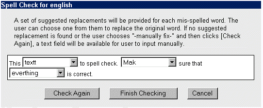

| Leveid a nagy szövegdobozban írod. Ha készen vagy a levéllel, ellenõrizheted, tartalmaz-e helyesírási hibákat. Hosszabb leveleket átolvasni fárasztó lehet. Szerencsére, az OpenWebMail tartalmaz helyesírás ellenõrzõ szoftvert. Válaszd ki a megfelelõ szótárt amire szükséged van (English, vagy American), és kattints a "Helyesírás" gombra. Ez egy új ablakot nyit, a helyesírás ellenõrzõvel.
Ha a szöveg ez volt:
This textt to spell check. Mak sure that everthing is correct.
Egy ilyesmi ablakot fogsz látni a helyesírás ellenõrzõtõl:

A levél elírást tartalmazó, értelmetlen szavainak helyén legördülõ menü jelenik meg. A szavak javításához, kattints a legördülõ menübõl a helyes szóra. A javasolt szavak szerepelnek minden listában, illetve a -- Manuálisan Javít -- szöveg. Ha a szó amit használni szerettél volna nincs a listán,válaszd a -- Manuálisan Javít -- menüpontot. Ha végeztél, kattints a "Befejezi az ellnõrzést" gombra. Az ablak bezárul, és a javított szavak átíródnak az eredeti levélben. Ha egyes helyeken a -- Manuálisan Javít -- -ra mentél, kattints az "Újra ellenõriz"gombra, és egy mezõben tetszõlegesen átírhatod az adott szót. Ha kijavítottad ezeket a szavakat, rákattinthatsz a "Befejezi az ellenõrzést" gombra amivel visszajutsz a kijavított levélhez. |